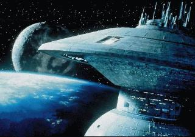

Welcome to Deep Space 14......

Welcome friend to the Federation starbase, Deep Space 14. Assigned to the remote area of the Neutral Zone, in former Romulan territory. The base orbit's the former Romulan planet known as Tu'Pal, and it's Federation Ambassador govern's both the planet and the station. Starfleet Command looked far and wide for a Ambassador for this Federation/Romulan station, and the stumbled upon only one choice, Alex "Paladine" Solarion.
Alex Solarion, a Federation Captain of well known history. His most known assignment was his Exectuive officer position on the USS. Melbourne, where he lost his oldest son during the battle of Wolf 359. He took the command position on board Deep Space 14 to get his family away from the trouble's of the galaxy. How wrong he was....
Not even Captain Solarion know's why Deep Space 14 was designed, and put out in the middle of a former enemies territory. The station faces danger on all side's, from the Cardassian and Dominion fleet's, Klingon Empire who's anger and revenge boil's still, and the Romulan's who's motives are unknown. All the crew know that their is a mystry behind the being of Deep Space 14, a mystery higher then their captain, and hidden well in Starfleet Command.
Deep Space 14, a shimmering guardian of peace and justice, a symbol of the well known freedom of the Federation. Alone in the dark space, a area of the galaxy known for blood shed, the crew and people of Deep Space 14 must overcome their fear's and anger to survive.
Join the crew of Deep Space 14, join Federation Sim Organization..become apart of the excitement to protect the galaxy..and see what his station's great mystery is......
To ask or to join Deep Space 14, please contact Captain Solarion at: paladine@mnsinc.com
Go to Federation Sim Organization: www.geocities.com/Area51/Corridor/1071/
Go to Geocities (thank's again for this fine space!): www.geocities.com